Lecture 13: Training Data
Video blocked (ad-blocker or local file mode).
Watch on YouTubeVideo not loading? Watch on YouTube
Original lecture. Percy Liang on data: where it comes from, who owns it, and how it gets cleaned.
Coverage and sourcing
This lesson follows Lecture 13 of CS336 (Spring 2026, Percy Liang), “Training Data.” The session’s claims are referenced with timestamps from the official subtitle transcript. The copyright figures are from the 2025 rulings the lecture discusses. Exact settlement numbers are quoted from the lecture. Claims about what frontier labs train on are marked unknown where the source is silent: nobody discloses the real corpus anymore. The coverage map at the end maps every major lecture claim to the section that covers it.
The problem: the paper says nothing about the data
Data is the most important thing to get right 00:24 ⏱00:24. The Llama 3 paper discloses everything about the architecture and the training procedure, and says nothing about the data. Two reasons for the secrecy: competitive dynamics, and copyright liability 00:58 ⏱00:58.
Subchapter: why the secrecy has two locks
The two locks work differently. The competitive lock: the data recipe is the recipe. Two labs with the same architecture and the same compute get different models if their data differs. Publish the mixture and you hand the competitor the difference. The legal lock: name the corpus and you hand plaintiffs a witness list. Meta announced Books3, a corpus of pirated books, as a Llama 1 source. The lawsuits followed. The lesson landed across the industry: after Books3, nobody announces. The secrecy is rational twice over.
| Lock | What leaks | Who it hurts | Source: original. |
|---|---|---|---|
| Competitive | publish the mixture, hand the competitor the difference | the lab (lost moat) | lecture |
| Legal | name the corpus, hand plaintiffs a witness list | the lab (lawsuits) | lecture |
Subchapter: the three-stage shape of modern training data
Data arrives in stages, and the trend is one direction 02:18 ⏱02:18.
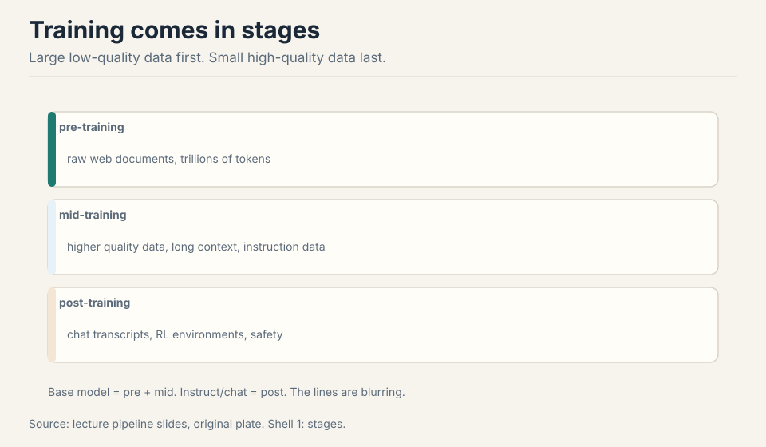
Pre-training takes raw web documents. Mid-training upgrades to higher quality data and adds long context. Post-training is chat transcripts and RL environments. The largest new models skip the base-model checkpoint entirely: just one release 03:30 ⏱03:30.
Subchapter: read the stages as a funnel
The stages are not a timeline. They are a funnel. Pre-training is wide: trillions of tokens, quality mixed, the model learns the world. Mid-training is narrower: better data, longer contexts, the model learns the hard things. Post-training is narrowest: thousands to millions of examples, the model learns to behave. Each stage re-spends the model’s attention on a smaller, better set. The funnel’s direction never reverses: you never post-train on the raw crawl and pre-train on chat transcripts. The order follows the learning rate and the token count: big crude steps first, fine precise steps last.
Subchapter: why base checkpoints are disappearing
The largest new models skip the base-model checkpoint entirely 03:30 ⏱03:30. The reason is the funnel plus mid-training. Once high-quality data mixes into the decay phase (Lecture 15), the “base model” is already partly post-trained. Shipping it as a base checkpoint invites users to fine-tune from a midpoint the lab tuned for its own recipe, not for reuse. The honest label for what ships is the instruct model. The base checkpoint is a snapshot of an intermediate that the lab no longer considers a clean starting point.
First attempt: train on the entire internet
“Trained on the entire internet” does not type-check. The web is live servers. Unless you are an RL agent, you do not train on servers: a crawler discovers pages and downloads them 05:16 ⏱05:16. And the crawlable web is much smaller than the web.
Subchapter: what a crawler actually does
A crawler is a program that walks the web’s link graph. Start from seed pages. Fetch each page. Extract its outgoing links. Add the unseen ones to the queue. Repeat. The crawler stores what it fetches, not what the web “is.” It never sees pages nobody links to. It never sees what sits behind a login. It never sees what loaded only in a browser with JavaScript. “The internet” in the training-data sense is always the crawlable subset: the pages a polite link-following robot could reach and was allowed to take.
Subchapter: the five walls
Work the gap. The web has hundreds of billions of pages. Five walls shrink what is reachable.
Wall 1: the deep web. Dynamic apps and the deep web have no hyperlinks to follow: no links, no crawl. A flight-booking app renders results from a database. The crawler sees the search box, not the flights.
Wall 2: authentication. The big platforms lock their content behind logins. The crawler is not a user. It does not have an account.
Wall 3: robots.txt. By mid-2023, about half of websites fully restricted crawling 10:43 ⏱10:43. The “Consent in Crisis” study (Longpre et al.) documented the collapse: sites that once welcomed crawlers now refuse them. A robots.txt file is a polite request, not a lock, but labs that ignore it invite lawsuits.
Wall 4: anti-bot. Cloudflare, CAPTCHAs, rate limits, IP blocks. The crawler must look human or be blocked. At Common Crawl’s scale, polite crawling means throttling to each site’s tolerance.
Wall 5: terms of service. Terms increasingly say no AI training. This is a legal wall, not a technical one: the page loads fine, but taking it is a contract violation.
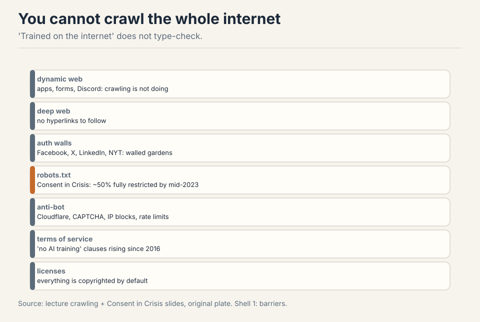
Subchapter: the easy path is piracy
And then shadow libraries (LibGen, Anna’s Archive) bypass all of it: piracy from servers in other countries 12:50 ⏱12:50. The easy path exists. It is illegal. The shadow libraries hold the books the walls keep out: millions of volumes, full text, no licenses. Every lab knows they exist. Using them is the difference between a data problem and a legal problem.
Subchapter: work the robots.txt collapse
The “Consent in Crisis” numbers matter because they changed the default. Before 2023, a crawler could assume most sites allowed crawling. After mid-2023, about half fully restrict it. The restriction is usually aimed at AI training crawlers specifically: the same site that welcomes Googlebot blocks the training crawler by user-agent string. The crawler’s politeness is now a negotiation: identify as a training crawler and be blocked, or identify as something else and be deceptive. Common Crawl respects robots.txt, which is why its coverage shrank as the restrictions grew. The open crawl gets smaller exactly as the demand for training data gets larger.
Where the easy path breaks: copyright
Everything on the internet is copyrighted. The Copyright Act of 1976 lowered the bar: fixed in a tangible medium is enough, registration not required (sue later for $65). It lasts 75 years, then the public domain 14:31 ⏱14:31.
Subchapter: why everything is copyrighted
The bar is “fixed in a tangible medium.” A blog post is fixed when it is written. A comment is fixed when it is posted. No registration, no copyright notice, no application. The 1976 Act removed every formality. The duration is 75 years in the lecture’s telling (the exact term varies by work type and date, but the point stands: longer than any model’s training run). The public domain is where works go when the term expires. Almost nothing on the modern web is there.
Subchapter: the two legal doors
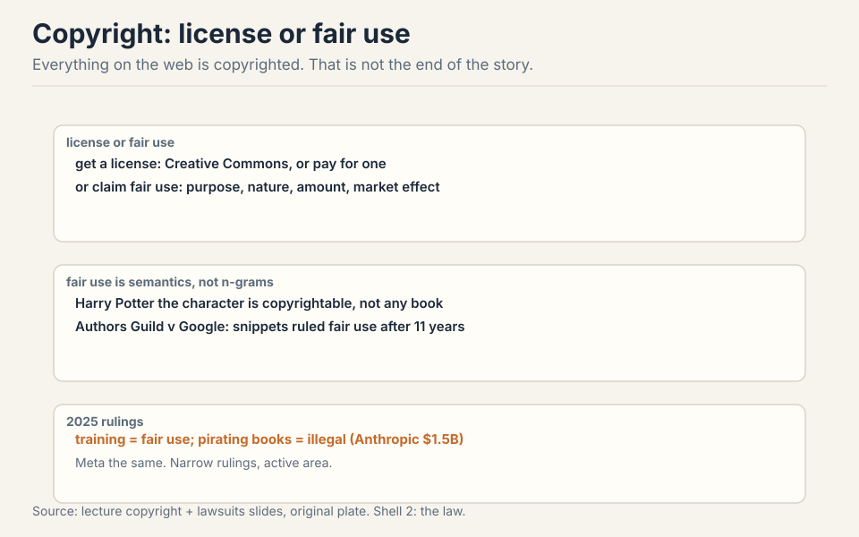
You can use copyrighted works two ways. Get a license (Creative Commons bridges the 75-year wait. Or pay for a deal). Or claim fair use, section 107: purpose and character, nature of the work, amount used, effect on the market. Fair use is semantics, not verbatim overlap: Harry Potter the character is copyrightable, not any particular book 24:51 ⏱24:51. Authors Guild v Google took 11 years and ruled snippets fair use: the precedent the field leans on 24:11 ⏱24:11.
Subchapter: fair use is economics, not string matching
The four factors are an economics test, not a plagiarism test. Purpose and character: is the use transformative, doing something new with the work? Nature of the work: facts get less protection than fiction. Amount used: how much did you take? Effect on the market: does the use substitute for the original? The Harry Potter example shows the semantics: the character is protected even when no sentence is copied. A model that never emits a verbatim passage can still be trained on the books. The fair-use question for training is whether learning from a work is transformative (the field says yes) and whether the model substitutes for the work in the market (the open question).
Subchapter: the Authors Guild precedent, and its limits
Authors Guild v Google took 11 years. The ruling: showing snippets of scanned books is fair use. The field leans on this hard. Its limits: snippets are not training. Google showed users a few lines. A lab feeds the whole book to the optimizer. The purpose differs (search vs model weights), the amount differs (snippets vs full text), the market effect differs (a snippet sells the book. A model that memorized the book might replace it). The precedent is the closest one available, not a direct one. The 2025 rulings tested the direct question.
The 2025 picture: three layers
The 2025 picture, in three layers. Accessing: robots.txt, terms of service, and anti-bot measures can make the download itself a violation even when training would be fine. Copying: mere copying can violate copyright. Anthropic paid $1.5 billion to settle, about $3,000 a book 27:40 ⏱27:40. Training: so far ruled fair use, narrowly. Note the layering: training can be fair use while the copying that enabled it is not. And terms of service are a separate layer on top 27:07 ⏱27:07. The Meta case followed the same pattern.
Subchapter: the three copyright layers, priced
The layers decide independently. Access: you crawled a site whose robots.txt says no. That is a violation even if training would have been fair use. Copying: you downloaded about 500,000 pirated books. Anthropic’s settlement: $1.5 billion, about $3,000 per book. The copying was the crime, not the training. Training: the model weights themselves. So far, ruled fair use in narrow cases: transformative purpose, no market substitution by the training act itself.
Subchapter: work the Anthropic arithmetic
$1.5 billion over about 500,000 books: roughly $3,000 per book. The number is a settlement, not a fine: both sides avoided a ruling. But it prices the copying layer. The books came from shadow libraries. The training on them was separately ruled fair use. The case is the cleanest demonstration of the layering: the same corpus was legal at layer 3 and a billion-dollar violation at layer 2. The practical reading: the cheapest layer to satisfy is the most restrictive one. License-only data (Common Pile) clears all three layers at once. Common Crawl clears access (respect robots.txt) and argues fair use for training, but the copying layer stays murky for anything pirated. Shadow libraries fail at layer 2 for $1.5B. When someone says “training is fair use,” ask which layer they mean: the answer is usually only layer 3.
| Layer | Decides | Anthropic case | Source: original. |
|---|---|---|---|
| 1. Access | robots.txt, terms, anti-bot: was the download itself allowed | Respected crawler assumed | lecture slides, 2025 rulings |
| 2. Copying | mere copying can violate: the download is the crime | $1.5B settlement, about $3,000 per book | lecture slides, 2025 rulings |
| 3. Training | fair use, narrowly and so far only | ruled fair use, separately | lecture slides, 2025 rulings |
The honest answer has three layers. First, accessing it: robots.txt, terms of service, and anti-bot measures can make the download itself a violation even when training would be fine. Second, copying it: mere copying can violate copyright. The Anthropic case settled at $1.5 billion over pirated books while separately finding training was fair use. Third, training on it: so far ruled fair use in narrow cases, but not settled in general. Practical rule: permissively licensed data is safe, Common Crawl appeals to fair use, and shadow libraries are piracy. This is an active area. Verify with counsel, not with a lecture. Slapping a permissive license on a work you do not own, or claiming a dataset is permissively licensed because its collection page says so. Collection licenses do not extend to the individual works. The Common Pile project found that many “permissively licensed” datasets on Hugging Face fail at the individual-work level. If you are risk-averse, you must check licenses per work, not per dataset page. Same three layers, same split. The copying of books from shadow libraries was the liability. The training itself was argued as fair use. The pattern across both 2025 cases: courts separate the act of acquiring the data from the act of training on it. Labs now design their pipelines around this split: acquire cleanly (license or respect robots.txt), argue fair use for training. The acquisition layer is where the money is lost.
Subchapter: the terms-of-service layer
Terms of service are a separate layer on top 27:07 ⏱27:07. This is contract law, not copyright. A site’s terms can forbid AI training even for content the site does not own. The crawler that respects robots.txt but ignores the terms is clean on layer 1 (access) only if the terms are not enforced as a contract. Enforcement varies by jurisdiction and is actively litigated. The practical effect: large labs negotiate data deals (Reddit, news publishers) to clear this layer with money, while the open community relies on Common Crawl’s politeness. The layer is invisible in the corpus and decisive in court.
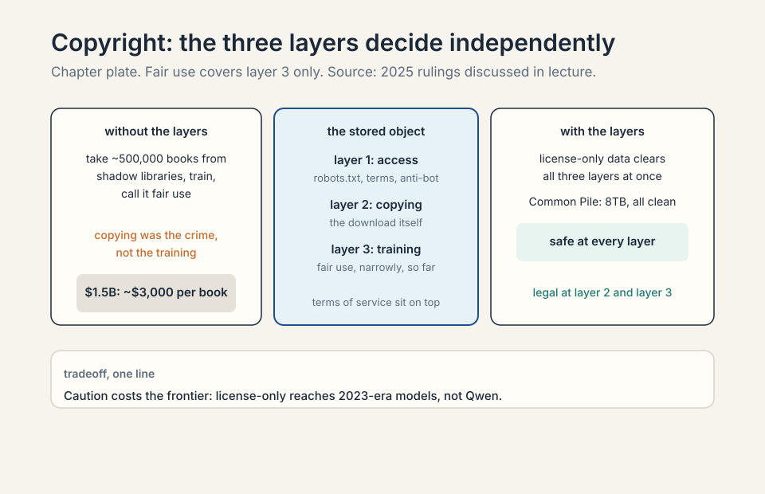
The key question
The crawlable web is small, the law is layered, and raw downloads are mostly junk. What if the filtering is the model? What if the funnel, from hundreds of trillions of tokens to a few trillion, matters more than the architecture? That is the dataset story.
Subchapter: why the funnel beats the architecture
The architecture is public. Every lab reads the same papers. The data recipe is private. Two labs with identical architectures get different models from different funnels. The DCLM, a data-filtering recipe, result makes this concrete: the same Common Crawl, filtered differently, trains a better model from 1.4% of the tokens. The architecture did not change. The funnel did. When the architecture is commoditized, the funnel is the moat.
Common Crawl: the open raw material
Common Crawl has run a monthly web crawl since 2007: 3 to 5 billion pages per dump, about 300 billion total 32:37 ⏱32:37. WARC files hold the raw HTTP responses. WET files hold lossy extracted text.
Subchapter: WARC versus WET
A WARC file (Web ARChive) stores the raw HTTP response: headers, HTML, scripts, everything the server sent. A WET file stores extracted text: the WARC run through a text extractor that strips tags. WARC is faithful and huge. WET is lossy and usable. The extraction that converts WARC to WET is the first filter in the pipeline, and it is crude: the stock conversion keeps navigation bars and cookie text. The choice of extractor changes the tokens, which changes the model.
Subchapter: the extraction tool matters
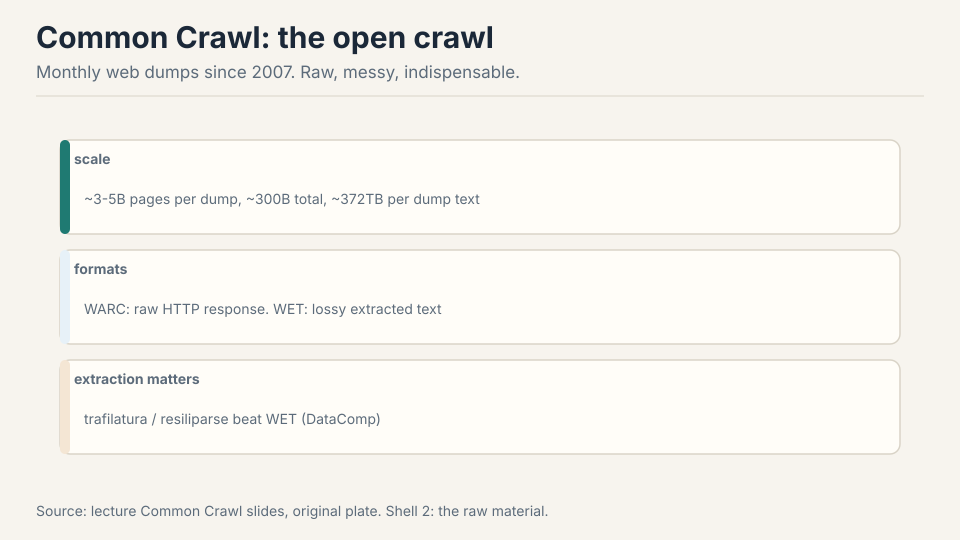
The extraction tool matters. Trafilatura and Resiliparse beat the stock WET conversion (DataComp LLM ablation) 35:32 ⏱35:32. Work the difference: WET conversion strips boilerplate crudely, keeping nav bars and cookie text. Trafilatura keeps the article and drops the chrome. Same pages, different tokens, different model. Crawling is conceptually graph traversal. The gory details are the product: refresh policies, dedup, mirror sites, dynamic URLs 33:41 ⏱33:41.
Subchapter: what the gory details cost
Refresh policies: the web changes, so the crawler must re-fetch. Re-fetch too often and you waste bandwidth and anger site operators. Re-fetch too rarely and you train on stale pages. Dedup: the same content lives at many URLs. Mirror sites: whole domains duplicated. Dynamic URLs: the same page with a thousand query strings, each “a new page” to a naive crawler. Each detail is a filter before the filter: decisions made at crawl time that no downstream step can undo. The lecture’s point is that these unglamorous choices are the product. The crawl is the first training-data decision, made years before the model trains.
Step one: discovery. The crawler follows hyperlinks from seed pages, fetching robots.txt first and honoring it. Step two: download. The HTTP response is stored raw in a WARC file: headers, HTML, everything. Step three: extraction. Trafilatura strips the navigation, ads, and cookie banners, keeping the article text. The stock WET conversion does this crudely and keeps junk. Step four: filtering. fastText, a fast linear text classifier, or rules decide whether the text looks like the target quality. Step five: dedup. Near-duplicate spans are removed globally. Step six: tokenization. Only then does it become training tokens. Each step loses or corrupts data: bad extraction poisons everything downstream, which is why the tooling matters as much as the crawl. Because the model would learn HTML. Tags, scripts, navigation bars, and duplicated chrome would dominate the token budget, and the model would spend capacity modeling page structure instead of language. Extraction is the step that converts “the web” into “text worth learning from.” The lecture’s point: same pages, different extraction, different model. The pipeline is the data. Common Crawl re-crawls monthly, but any single URL is re-fetched on the crawler’s schedule, not the site’s update schedule. A news site updated hourly trains from a snapshot weeks old. A stable reference page trains from a fresh copy. The refresh policy decides the corpus’s temporal mix: how much of your training data is current events versus stable knowledge. No downstream filter can recover a page that was never re-fetched. The policy is a data decision wearing a systems costume.
Quality pockets: dense sources, special handling
The web is not uniform. Three pockets deserve special handling 36:28 ⏱36:28.
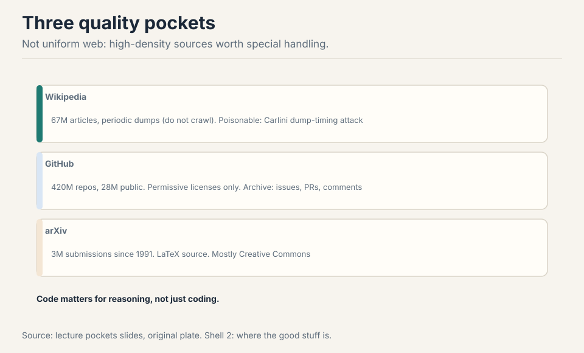
Wikipedia (67M articles): download the dumps, do not crawl. Even “high quality” can be attacked: Carlini’s dump-timing poisoning edited Wikipedia just before the dump and rolled back after 38:40 ⏱38:40. The attack window is the dump schedule itself.
Subchapter: the dump-timing attack, worked
The attack exploits the dump schedule. Wikipedia publishes full database dumps on a fixed cadence. An attacker edits an article to insert poisoned text just before the dump, then reverts the edit after. The dump contains the poison. The live article does not. Anyone auditing the live article sees nothing wrong. The training corpus contains the attack. The window is the dump schedule itself: predictable, public, and the only moment that matters. The defense is dump verification: diff the dump against the live revision history, or take multiple dumps and keep only stable content. The lecture’s point: even the most trusted source has an attack surface, and the surface is the pipeline’s timing, not the content’s quality.
GitHub (420M repos, 28M public): train on permissive licenses only. The GitHub Archive records every event. Code matters for reasoning, not just coding: the reasoning gains from code data show up on math and logic too.
Subchapter: why permissive licenses only
GitHub code carries licenses per repository. Training on copyleft code (GPL) risks contaminating the model’s outputs with license obligations: the legal theory is untested, but the risk is real enough that every serious code corpus filters by license. The Stack keeps only permissively licensed code (MIT, Apache, BSD): licenses that permit reuse without conditions. The GitHub Archive (GH Archive) records every public event: pushes, issues, pull requests. The events are the process data: not just the code, but how it was written, reviewed, and fixed.
Subchapter: code as a reasoning corpus
Code matters for reasoning, not just coding. A for-loop is a worked example of iteration. An if-statement is branching. A function is abstraction with a contract. Millions of these, each machine-checked by execution, teach precise step-by-step deduction. The reasoning gains show up on math and logic benchmarks, not just code benchmarks. The mechanism: the model learns the shape of rigorous argument from code, then applies the shape to prose. This is why code is overweighted in every frontier mixture relative to its share of the web: it is the densest reasoning signal in text.
ArXiv (3M submissions since 1991): LaTeX source, mostly Creative Commons. Equations as text, not images: the model reads the math.
Subchapter: why LaTeX source beats the PDF
The arXiv PDF renders equations as images. The LaTeX source
contains them as text: \int_0^1 x^2 dx instead of pixels.
The model reads the math as tokens it can predict, not as
shapes it must OCR. Most arXiv submissions are Creative
Commons licensed, which clears the copyright layers. The
corpus is 3M submissions since 1991: the densest technical
prose on earth, with the math intact. This is the quality
pocket that needs the least filtering: the authors already
filtered by writing papers.
Code is executable logic with exact semantics. A for-loop teaches iteration, an if-statement teaches branching, a function teaches abstraction: all of these are reasoning patterns, not syntax. When the model trains on code, it sees millions of worked examples of precise step-by-step deduction, each one machine-checked by execution. Math and logic questions reuse the same patterns: chain deductions, track state, verify each step. The lecture’s evidence: the reasoning gains from code data show up on math and logic benchmarks, not just code benchmarks. That is why The Stack matters beyond programming: it is a reasoning corpus wearing a code corpus’s clothes. Transfer. LLVM IR is a shared low-level representation: the same IR patterns appear across languages. A model that sees Rust code paired with its IR, and C code paired with its IR, learns the common substrate. Then a low-resource language’s IR lets the model bootstrap understanding from the shared patterns. It is the same idea as multilingual training: the shared representation carries knowledge across the boundary. Three reasons. One: the dumps are complete and structured: every article, every revision, in one download. Crawling re-discovers what the dump hands you. Two: politeness. The Wikimedia Foundation asks crawlers not to hammer the live site. The dumps exist precisely so bulk users do not crawl. Three: reproducibility. A dated dump is a fixed artifact: everyone trains on the same bytes. A crawl is a moving target. The exception is the poisoning attack: the dump’s fixed schedule is also its attack surface.
A decade of datasets: the filtering arms race
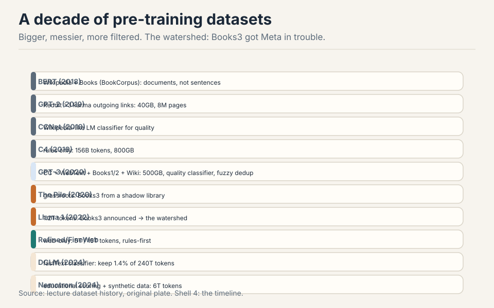
BERT (2018): Wikipedia plus Books, documents not sentences. GPT-2 (2019): outgoing links from Reddit posts with >3 karma, 40GB. CCNet (2019): Wikipedia-like language-model classifier. C4, the Colossal Clean Crawled Corpus (2019): rules only, 156B tokens. GPT-3 (2020): Common Crawl plus WebText plus Books1/2, quality classifier, fuzzy dedup, 400B tokens. The Pile (2020): grassroots, including Books3 from the shadow library Bibliotik. Llama 1 (2022): 1.2T tokens, and announcing Books3 got them in trouble: the watershed that silenced everyone 60:47 ⏱60:47. RefinedWeb then FineWeb: web-only, 5T then 15T tokens, rules-first. DCLM (2024): fastText (a fast linear text classifier) on OpenHermes plus ELI5, keep 1.4% of 240T tokens, and the magic works. Nemotron (2024): LLM-judged educational value, synthetic rephrasing, 6T tokens.
Subchapter: read the timeline as an arms race
Read the timeline as an arms race. Each generation filters harder, keeps less, and gets more from what it keeps. Secrecy grew alongside: after Books3, nobody announces the corpus. The two curves move together: the better the filtering, the more valuable the recipe, the less is disclosed. The open datasets are the ones from before the secrecy or from labs that chose openness as strategy (Hugging Face, NVIDIA, EleutherAI).
Subchapter: one idea per generation
Each generation’s single filtering insight.
- BERT (2018): documents, not sentences. Contiguous text teaches long-range structure. 16GB total: tiny by later standards.
- GPT-2 (2019): Reddit karma as the filter. Outgoing links from posts with >3 karma: human upvotes as quality signal. 40GB.
- C4 (2019): rules only, no ML. Heuristics you can audit by hand: no ML bias, but no learning either. 156B tokens.
- GPT-3 (2020): a quality classifier plus fuzzy dedup. The first learned filter at scale. 400B tokens.
- The Pile (2020): grassroots curation. 22 hand-picked sources including Books3 from the shadow library Bibliotik: the corpus that later caused the watershed.
- Llama 1 (2022): 1.2T tokens and a public corpus list. The announcement of Books3 drew legal fire: after this, nobody announces.
- FineWeb (2024): web-only at 15T tokens, rules-first then classifiers. Proof that the open web, filtered hard, still works.
- DCLM (2024): a fastText classifier trained on instruction data plus ELI5. Keep 1.4% of 240T tokens. The kept fraction beats the whole.
- Nemotron-CC (2024): NVIDIA’s open corpus, LLM-judged educational value plus synthetic rephrasing. The synthetic-heavy open option: model-written text as a quality lever.
The pattern: the filter moves from human signals (karma) to rules to learned classifiers to classifiers trained on surprising targets (instruction data). Each step keeps less and gets more.
| Generation | Filter insight | Tokens | Disclosure | Source: original. |
|---|---|---|---|---|
| BERT (2018) | documents, not sentences | 16GB | open | lecture |
| GPT-2 (2019) | Reddit karma >3 as filter | 40GB | open | lecture |
| C4 (2019) | rules only, no ML | 156B | open | lecture |
| GPT-3 (2020) | quality classifier plus fuzzy dedup | 400B | open | lecture |
| The Pile (2020) | 22 hand-picked sources, incl. Books3 | 22 sources, grassroots | open | lecture |
| Llama 1 (2022) | public corpus list incl. Books3 | 1.2T | the watershed: lawsuits followed | lecture |
| FineWeb (2024) | rules-first then classifiers | 15T | open recipe | lecture |
| DCLM (2024) | fastText on OpenHermes plus ELI5, keep 1.4% | 3T of 240T | open recipe | DataComp-LM paper |
| Nemotron (2024) | LLM-judged educational value plus synthetic rephrase | 6T | open recipe | lecture |
Subchapter: the Books3 watershed, in detail
Books3 was 197,000 pirated books from the shadow library Bibliotik, included in The Pile. Meta listed it as a Llama 1 training source. The listing was the watershed: it gave plaintiffs a named corpus, a named source, and a named defendant. The lawsuits that followed (the 2025 pattern) taught the industry that disclosure is liability. The technical irony: Books3 was genuinely useful data. Long-form prose, edited, diverse. The legal lesson overwrote the technical one: useful does not mean usable. After Books3, the field’s best data went dark.
Rules vs classifiers: the funnel is the lever
Two schools. Rules (C4, Gopher, RefinedWeb): control, no ML bias. Write heuristics, apply everywhere, audit by hand. Classifiers (CCNet, GPT-3, DCLM): decide what “good” looks like, train it, filter everything.
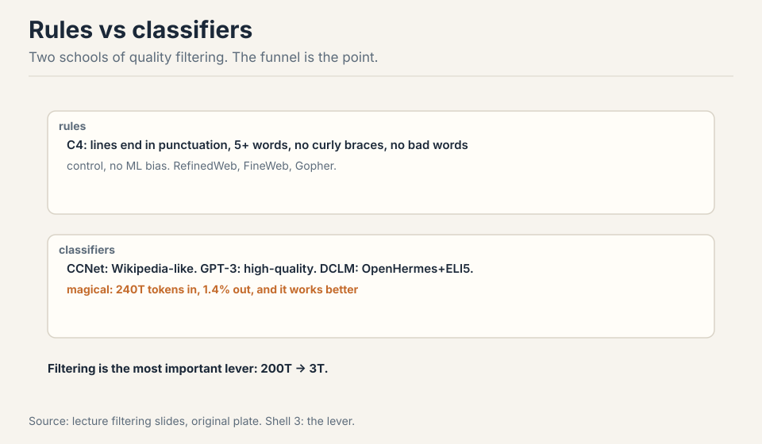
Subchapter: the rules school, mechanized
Rules are heuristics on the text itself. C4’s rules: drop pages with too few words, too many words, no terminal punctuation, excessive boilerplate ratios, bad language ID. Each rule is a line of code you can read. The audit property: for any dropped document, you can name the rule that dropped it. The cost: rules cannot learn. A fluent conspiracy-theory page passes every length and punctuation rule. An awkward but brilliant forum post fails them. Rules filter the shape of quality, not the substance.
Subchapter: the classifier school, mechanized
Classifiers learn “good” from a positive set. CCNet: train a language model on Wikipedia, keep pages with low perplexity (Wikipedia-like: perplexity is how surprised the model is by the text). GPT-3: train a classifier with WebText, Wikipedia, and books as positives. DCLM: fastText on instruction data plus ELI5. The classifier generalizes the positive set’s properties to the whole web. The audit problem: no single rule explains a decision. The positive set’s biases become the filter’s biases. The power: the classifier sees substance, not just shape. It keeps the awkward brilliant post and drops the fluent garbage.
Subchapter: why the schools combine
The field converged on both: rules first, classifiers second (FineWeb’s recipe). Rules are cheap: they drop the obvious junk (boilerplate, wrong language, too short) at negligible compute. Classifiers are expensive: running fastText over trillions of tokens costs real money. The rules pass shrinks the pool so the classifier pass is affordable. The order matters: classifier-first wastes the expensive filter on documents the cheap filter would have dropped. The funnel is two funnels in series.
The strangest wins: DCLM’s classifier trained on instruction data plus ELI5 beats everything, and nobody fully knows why 66:04 ⏱66:04. Work the funnel: 240 trillion tokens in, about 3 trillion out. Keep 1.4%. That 1.4% trains better models than the full 240T. Filtering is probably the single most important lever in data processing 79:34 ⏱79:34.
Subchapter: work the DCLM funnel
The numbers. Raw pool: 240 trillion tokens of Common Crawl. The filter: a fastText linear classifier, positives from OpenHermes (instruction data) plus ELI5 (explain-like-I-am-five answers). Threshold tuned to keep 1.4%. Output: about 3 trillion tokens.
Why it wins: the classifier learns “text that looks like a good answer to a question.” Instruction data teaches the shape of helpfulness. ELI5 teaches clear explanation. The kept 1.4% is dense in exactly the behaviors post-training wants to extract. Training on the full 240T spends 98.6% of the compute on tokens that teach nothing: boilerplate, SEO spam, duplicated chrome.
The mystery: nobody fully knows why instruction data plus ELI5 is the magic positive set. It works better than Wikipedia-like classifiers (CCNet) and better than book-like targets. The working hypothesis: question-answering is the densest form of knowledge transfer in text. But it is a hypothesis, not a proof. The funnel is empirical: try targets, measure downstream, keep the winner.
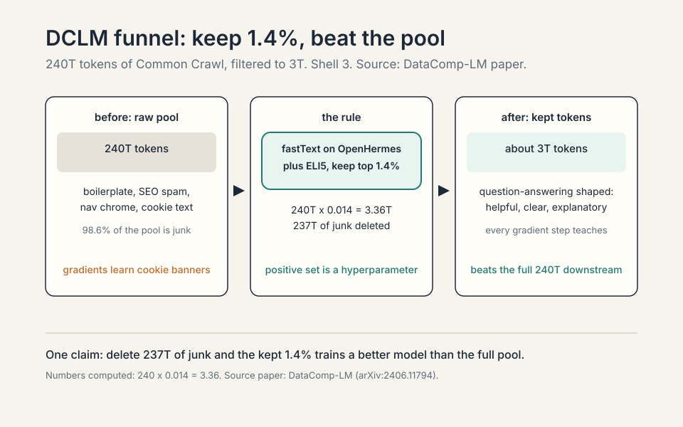
Out: 240T x 0.014 = 3.36T, about 3 trillion tokens. It beats the full set because the dropped 98.6% is mostly anti-signal: boilerplate, navigation chrome, SEO spam, duplicated text. Training on the full 240T means the model spends most of its gradient steps learning to predict cookie banners. The kept 3T is dense in question-answering-shaped text (the classifier’s positive set: OpenHermes plus ELI5). Every gradient step teaches something. The lesson: at fixed compute, data quality beats data quantity by a wide margin. The funnel is the cheapest performance lever in the pipeline. When you need auditability and control. Rules (C4, RefinedWeb) are heuristics you can read: no ML bias, no hidden preferences, every kept document explainable. Classifiers learn “good” from a positive set, and the positive set’s biases become the filter’s biases (DCLM’s instruction-data target is itself a choice). Rules also cost nothing to run and never drift. The tradeoff: rules cannot learn subtle quality (they keep fluent garbage and drop awkward gold). Use rules for the first coarse pass, classifiers for the fine pass. FineWeb does exactly this: rules-first, then classifiers. Because the obvious positive set is Wikipedia: the highest-quality prose on the web. CCNet used Wikipedia-like as the target. DCLM tried instruction data plus ELI5 and won. The surprise is that question-answering shape beats encyclopedia shape as a quality target. The working theory: the model is trained to answer, so text shaped like answers transfers best. But nobody proved it. The field learned to test positive sets empirically instead of reasoning about them: the funnel rewards experiments, not theories.
Subchapter: the fastText mechanics
fastText is a linear classifier on bag-of-ngrams: fast enough to run over trillions of tokens. The DCLM recipe: take the positive set (OpenHermes plus ELI5), take a random sample of the raw pool as negatives, train fastText to separate them, score every document, keep the top 1.4%. Linear means the decision is a weighted sum of ngram features: auditable in principle (inspect the top-weighted ngrams), crude in practice. The speed is the point: a transformer classifier would be better and impossibly expensive. fastText is the filter that fits the budget.
Subchapter: KenLM and the generative alternative
KenLM is a fast n-gram language model. The generative filtering recipe: fit KenLM on the target set T, score every document in the raw pool R by perplexity, keep the low perplexity ones. Perplexity is “how surprised is the Wikipedia-trained model by this text”: low surprise means Wikipedia-like. This is the CCNet recipe and the OpenMathText recipe (rules plus KenLM plus fastText, 15B tokens that beat 20x unfiltered data). Generative versus discriminative is the filtering version of the classic ML split: model the good data, or model the boundary between good and bad. The field uses both, often stacked.
| School | Models | What it learns | Fails on | Source: original. |
|---|---|---|---|---|
| Generative (KenLM) | the good data T | surface statistics of T | fluent junk that sounds like T | lecture |
| Discriminative (fastText) | the boundary between T and R | ngrams that distinguish T from random web | a badly sampled negative set | lecture |
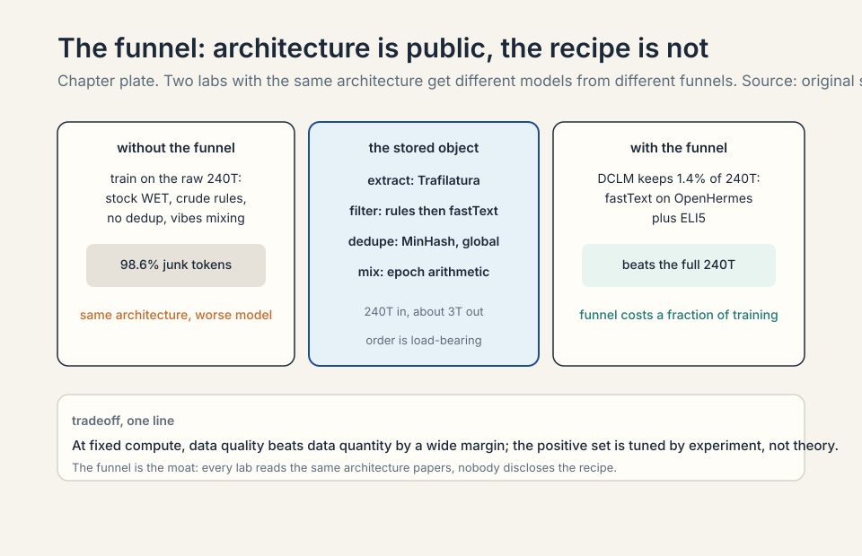
Code data and license-only data
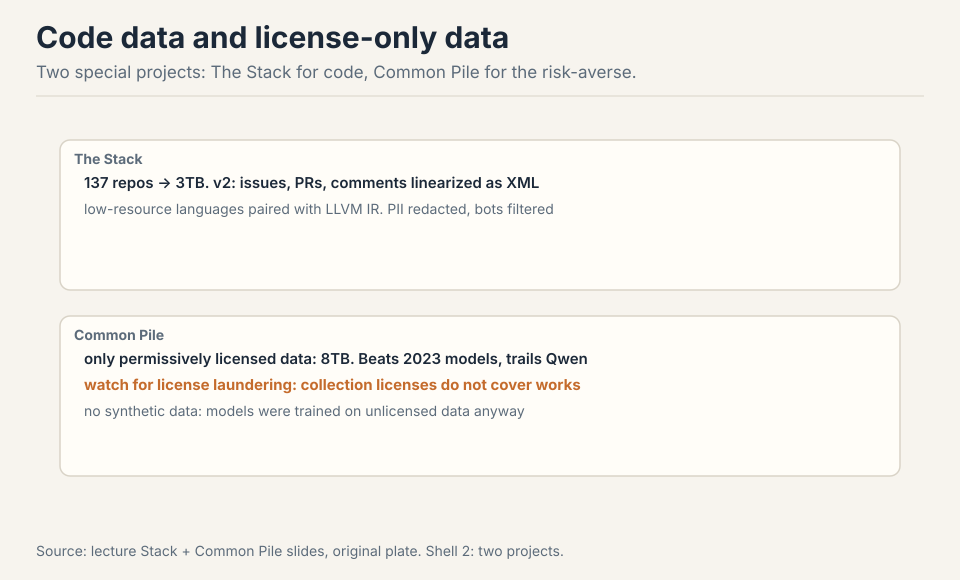
The Stack: 137 repos to 3TB of permissively licensed code. v2 adds issues, PRs, and comments linearized as structured events, so the model learns the development process, not just code. Low-resource languages get paired with LLVM IR so knowledge transfers from the shared low-level representation 72:46 ⏱72:46.
Subchapter: issues and PRs as process data
The Stack v2’s insight: the code is the artifact, the process is the knowledge. An issue describes a bug. A pull request fixes it. The review comments argue about the fix. Linearized as structured events (issue text, then diff, then comments), this is supervised training on software engineering itself: diagnose, propose, defend. The model learns the workflow, not just the syntax. This is the same division of labor as the synthetic agentic data in Lecture 14: pre-training supplies the language, process data supplies the procedure.
Common Pile: the risk-averse experiment. Only permissively licensed data, 8TB total, no synthetic data (data laundering: the models that generate it trained on unlicensed data). Result: competitive with 2023-era models, not with Qwen 78:52 ⏱78:52. Reasonable, not champion. License-only training is possible. It costs you the frontier.
Subchapter: work the Common Pile result
8TB of permissively licensed text. No synthetic data: the team refused model-generated text because the generating models trained on unlicensed data (data laundering: the taint flows through the generator). Trained models competitive with 2023-era models, not with Qwen. The honest reading: the license-only web is a real corpus. It teaches language, reasoning, and knowledge. What it lacks is the long tail the frontier lives on: the copyrighted books, the restricted articles, the data nobody can license at scale. The price of caution is measured in benchmark points: 2023, not 2026.
Subchapter: data laundering versus license laundering
Two different taints. Data laundering: train a model on unlicensed data, then generate “clean” synthetic data from it. The synthetic text is new, but the knowledge came from the unlicensed corpus. The Common Pile refused it. License laundering: claim a permissive license on a work you do not own, or trust a dataset page’s license claim. The Common Pile found many Hugging Face datasets fail at the individual-work level: the collection page says MIT, the files are copyrighted. Both are ways “clean” data turns out dirty. The defense is the same: verify per work, not per collection, and trace the provenance of synthetic data to its generator’s training set.
Data laundering: training a model on unlicensed data, then using that model to generate “clean” synthetic data. The synthetic text is new, but the knowledge in it came from the unlicensed corpus. Legally it is untested whether this cleans the taint. Practically, the Common Pile team decided it does not. They refused all synthetic data: 8TB of permissively licensed human text only. The price: competitive with 2023-era models, not with Qwen. The experiment’s honest result: license-only training works, but the frontier’s edge comes partly from data you cannot license. That is the cost of caution, measured. License laundering is slapping a permissive license on a work you do not own, or trusting a dataset page’s license claim. The Common Pile found many “permissively licensed” Hugging Face datasets fail at the individual-work level: the collection page says MIT, the individual files are copyrighted. Data laundering is about the training history of synthetic data. License laundering is about false license claims on real data. Both are ways “clean” data turns out dirty. The defense is the same: check per work, not per collection. Because the frontier is measured against the frontier, not 2023. The gap between Common Pile models and Qwen-class models is the commercially decisive gap: the one users pay for. The labs’ bet is that fair use covers training and that the acquisition layer can be managed (deals, polite crawling, litigation reserves). The Common Pile is the control group: it measures exactly what caution costs. The labs looked at the price and chose the risk.
Subchapter: what is used where (who trains on what)
The open datasets, mapped to who uses them, as of October 2026.
- FineWeb / FineWeb-2: Hugging Face’s open web corpus, 15T tokens (v1) plus multilingual (v2). The default open starting point: rules-first, classifier-refined.
- DCLM: the classifier recipe, keep 1.4% of 240T. The performance reference for open filtering. The DCLM paper is the DataComp-LM track (arXiv:2406.11794).
- Nemotron-CC: NVIDIA’s open web corpus, LLM-judged educational value plus synthetic rephrasing. The synthetic-heavy open option.
- The Stack v2: 3TB of permissively licensed code plus issues/PRs as process data. The code-data standard.
- Common Pile v0.1: 8TB license-only. The risk-averse option: competitive with 2023, not with the frontier. The paper documents the per-work license verification (arXiv:2506.05209).
- Frontier labs: undisclosed since Books3. Every claim about what works is filtered through what labs choose to say. [uncertain] for any specific lab’s current corpus.
The decision rule: if you can tolerate legal risk, Common Crawl plus the DCLM recipe. If you cannot, the Common Pile. If you need code, The Stack v2. If you want the frontier, you are on your own: nobody publishes the recipe.
| Tier | Examples | Catches | Price | Source: original. |
|---|---|---|---|---|
| Open and audited | FineWeb, DCLM, The Stack v2, Dolma | fully inspectable recipes | public, no legal risk | lecture |
| License-only | Common Pile (8TB) | clears all three copyright layers | 2023-era models, not Qwen | lecture |
| Synthetic | Nemotron-CC, Cosmopedia, phi textbooks | supply for the reasoning wall | generator’s knowledge bounds it | lecture |
| Secret | frontier lab corpora since Books3 | undisclosed, the real moat | unknown | [uncertain] |
Stage one: extraction. Trafilatura over stock WET: same pages, better tokens. Stage two: rules-first coarse filter. Drop the obvious junk: too short, too long, boilerplate ratios, bad language ID. This is cheap and auditable. Stage three: the classifier. Train fastText on your best positive set (instruction data if you have it, Wikipedia-quality text if not), keep the top few percent. Stage four: global dedup. MinHash LSH across the whole corpus, not per source: the gas-mask paragraph appears everywhere. Stage five: decontaminate. Remove anything matching your eval sets. Stage six: mix deliberately. Compute the implied epoch count per source before training: no silent 50-epoch traps. The funnel’s output is 3T tokens where every token earned its place. Into the rules and the classifier. Rules drop the majority: boilerplate, SEO, duplicates of duplicates. The classifier drops most of the rest: fluent but empty text. Dedup removes a smaller but critical fraction: the 61,000-copy paragraphs. The honest accounting: you are not selecting 3T good tokens from 240T. You are deleting 237T of junk, and the junk is the bulk of the web. Empirically. The candidates: Wikipedia (the obvious), books (the classic), instruction data plus ELI5 (the DCLM surprise). Train a fastText classifier per candidate, filter a fixed pool, train a small model on each filtered set, measure downstream. Keep the winner. Do not reason about which positive set “should” win: DCLM proved the reasoning loses. The positive set is a hyperparameter, tuned by experiment, not by theory.
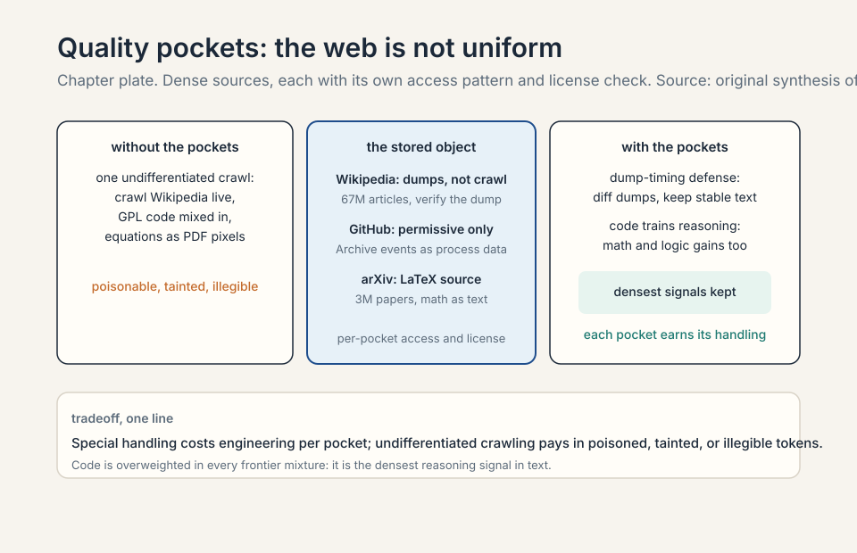
The economics of data: why data is the moat
The lecture’s throughline is economic. The architecture is public. The compute is rentable. The data recipe is the one input that is neither public nor rentable. This section makes the economics explicit.
Subchapter: the three inputs, priced
Compute has a price list: dollars per GPU-hour, public and comparable. Architecture has no price: the papers are free. Data has a hidden price: the filtering pipeline’s engineering, the legal risk’s expected cost, and the opportunity cost of the tokens you dropped. The labs compete on the hidden price. That is why the lecture calls data the most important thing to get right: it is the only input where getting it right is proprietary.
Subchapter: FineWeb-Edu and the educational filter
FineWeb-Edu is the educational-value variant: score web documents for educational content (originally with an LLM judge), keep the high-scoring ones. The insight: not all knowledge-dense text looks like Wikipedia. A well-written tutorial, a careful explainer, a thorough forum answer: these score high on educational value and low on Wikipedia-likeness. The filter’s positive set is “text that teaches.” It is the same shape as DCLM’s surprise: the question-answering density of text predicts training value. FineWeb-Edu became the default high-quality web subset for open training: the corpus you reach for when you want the funnel’s output without running the funnel.
Subchapter: multilingual data and FineWeb-2
English is a fraction of the web. FineWeb-2 extends the FineWeb recipe to multilingual data: language ID first, then per-language filtering. The difficulty: quality signals do not transfer across languages. A classifier trained on English instruction data knows nothing about good Swahili. Each language needs its own positive set, its own threshold, its own audit. The low-resource languages are the hardest: too little data to filter hard, too little data to train on. The lecture’s corpus is English-centric. The multilingual story is the same funnel with scarcer inputs and weaker filters.
Subchapter: long-context data is a separate pocket
Mid-training adds long context: the model must learn to use 128k+ tokens. Long documents are a quality pocket of their own: books, papers, code repos, long conversations. The filtering differs: length is the feature, not the bug. A 200-page PDF that the web filter dropped for being “too long” is exactly what mid-training wants. The funnel splits: the pre-training funnel optimizes per-token quality, the mid-training funnel optimizes per-document coherence at length. Same web, different target.
Subchapter: unique tokens versus repeated tokens
Dataset sizes mix unique and repeated tokens. A “15T token” corpus may contain 5T unique tokens seen 3 times each. The distinction matters for two reasons. One: the scaling laws count unique tokens (Lecture 9). Two: epoching has diminishing returns (Lecture 14’s threshold experiment). When a lab says “15T tokens,” ask how many are unique. The honest accounting separates the two. The field’s habit of mixing them is why corpus sizes are hard to compare.
Subchapter: the data-wall debate
Will we run out of data? The debate has two sides. The wall side: the high-quality web is finite. Filter at 1.4% and the kept pool is trillions of tokens, not quadrillions. Train at 100T tokens and you epoch the good data many times. The no-wall side: the funnel keeps improving (better filters find more keepers), synthetic data adds supply, and multimodal data is barely tapped. The lecture’s position is implicit: the funnel is the lever, and the lever still has room. The honest position: the wall is real for the highest-quality text and soft for everything else. The frontier’s response is the mid-training shift: spend the scarce good tokens where they matter most (the decay phase), not uniformly.
An LLM judge scores web documents for educational content: does this text teach something? High scores: tutorials, explainers, textbooks, careful answers. Low scores: SEO spam, social chatter, boilerplate. Keep the high scorers. The result is a web subset dense in knowledge transfer: the documents where a human reader would learn something. It beats unfiltered web on downstream benchmarks because every token teaches. The filter’s positive set is “text that teaches,” which generalizes better than “text that looks like Wikipedia”: a good tutorial looks nothing like an encyclopedia article. FineWeb-Edu is the open community’s default high-quality web corpus: the funnel’s output, bottled. Coverage. Wikipedia covers established knowledge in encyclopedia style. Educational web text covers how-to knowledge, practical reasoning, and explanations in many styles. The model needs both. The Wikipedia filter kept the encyclopedia and dropped the tutorials. The educational filter keeps both. The lesson repeats the DCLM surprise: the obvious positive set is not the best one. Test, do not theorize. When the task needs the long tail the filter drops. The educational filter keeps text that teaches: it drops slang, dialects, informal reasoning, and the messy human text that teaches the model how people actually write. A model trained only on FineWeb-Edu is knowledgeable and stilted. The mixture needs the raw web’s breadth alongside the filter’s depth. The funnel is a component, not the whole corpus.
The question: will labs run out of high-quality training data? The wall case: filter at 1.4% and the good pool is trillions of tokens. Train at 100T tokens and you repeat the good data dozens of times, with diminishing returns. The no-wall case: better filters find more keepers, synthetic data adds supply, multimodal is untapped, and epoching is less harmful than feared. My reading of the lecture: the funnel is the lever, and the lever still moves. Better extraction (Trafilatura over WET), better targets (DCLM’s surprise), and better mixing (RegMix) each expanded the effective supply without new raw data. The wall is real for the highest-quality text and soft for the rest. The frontier’s answer is mid-training: spend scarce good tokens in the decay phase, where they matter most. Partly. Synthetic data adds supply: rephrased web text (Nemotron), generated textbooks (Cosmopedia), model-written reasoning traces. The catch is the laundering problem: the generator’s knowledge came from the same finite pool. Synthetic data rephrases and recombines. It does not create new facts. It helps for reasoning patterns (more worked examples) and hurts nothing for knowledge (no new facts). The wall for knowledge is the wall for human writing. Synthetic data moves the reasoning wall, not the knowledge wall.
Deep cuts: the open-data supply chain
The lecture names the headline datasets. The open community built a supply chain around them: replications, fully-open pipelines, and provenance tooling. These are the pieces a practitioner reaches for.
Subchapter: the Pile’s 22 sources
The Pile combined 22 sources. The heavy ones: Pile-CC (web), PubMed Central (biomedical papers), Books3 (the pirated books), OpenWebText2 (Reddit-filtered web), ArXiv, GitHub, FreeLaw (court opinions), StackExchange, Wikipedia, USPTO (patents), Project Gutenberg, DM Mathematics (synthetic math). The design was coverage: each source a domain, each domain hand-picked. The Pile’s lesson: a deliberate mixture of dense sources beats a bigger undifferentiated crawl. The Pile’s liability: Books3.
Subchapter: RedPajama and the LLaMA replication
Meta published LLaMA’s data mixture but not the data. The RedPajama project replicated it from open sources: Common Crawl filtered to match, plus C4, GitHub, books, arXiv, Wikipedia, StackExchange. The replication proved the mixture could be rebuilt in the open. The lesson: a published mixture is enough for the community to reconstruct the corpus. This is why labs stopped publishing mixtures too.
Subchapter: Dolma and the fully-open pipeline
AI2’s Dolma is the fully-open pipeline: the data, the code that made it, and the model (OLMo) trained on it. 3T tokens. The point is reproducibility: every filtering decision is inspectable. Dolma is the corpus you cite when you need to defend a data claim with evidence. The tradeoff: fully open means fully auditable, which means no proprietary tricks. Dolma is the floor, not the ceiling.
Subchapter: multilingual web corpora
MADLAD-400, CulturaX, HPLT: web-scale corpora for hundreds of languages. The pattern is the same funnel per language, with weaker filters for scarcer languages. The binding constraint is the positive set: there is no ELI5 for most languages. Quality estimation falls back to rules and language-ID confidence. The result: multilingual corpora are broader and noisier than English ones. The frontier’s multilingual ability comes from scale plus the transfer from English, not from equally clean per-language data.
Subchapter: language ID at scale
Meta’s language-ID classifier covers 176 languages. It is the first filter in every multilingual pipeline: route each document to its language’s funnel. The failure mode is confident misclassification: short documents, mixed-language documents, and low-resource languages get misrouted. The fix is thresholding: below a confidence, drop the document. Language ID is the least glamorous classifier in the stack and the one every multilingual corpus depends on.
Subchapter: the phi result (textbooks are all you need)
Microsoft’s phi models trained on synthetic textbooks: GPT-4-written explanations of programming concepts, filtered for quality. Small models, strong reasoning. The result’s reading: for reasoning, a small amount of excellent explanatory text beats a large amount of average web text. It is the DCLM lesson at the extreme: the funnel’s output matters more than its input. The caveat: the textbooks were synthetic, generated by a model trained on the unlicensed web. The laundering question applies.
Subchapter: Cosmopedia and synthetic textbooks at scale
Hugging Face’s Cosmopedia scaled the phi idea: millions of synthetic textbook-style documents, generated from web seeds. The corpus is open (the generation recipe is published). The use case: the high-quality educational text the web does not have in enough quantity. The limit: the generator’s knowledge bounds the synthetic text. Cosmopedia teaches reasoning patterns well and new facts poorly. It is supply for the reasoning wall, not the knowledge wall.
Subchapter: quality is per-domain
“Quality” has no universal definition because the target differs by domain. For chat: helpful, harmless, conversational. For math: correct, rigorous, step-by-step. For code: executable, idiomatic, tested. A document can be high-quality for one target and junk for another. The funnel’s positive set encodes the domain: DCLM’s instruction data for general chat, OpenMathText’s math corpora for math. The mistake is filtering once for all domains. The practice is per-domain funnels, then mixing (Lecture 14).
Subchapter: the Common Crawl index
Common Crawl publishes a columnar index: every URL, its WARC offset, its metadata. You query the index (Athena, or the index API) and fetch only the records you want. This is how practitioners build domain corpora without downloading petabytes: filter by URL pattern, fetch the matching WARCs, extract. The index is the crawl’s API. Most open corpora start here, not at the raw dumps.
Subchapter: WET versus Trafilatura, worked
Take a news article page. The WARC holds the full HTML: the article, the nav bar, the related-stories sidebar, the cookie banner, the comment section, the footer. The stock WET extraction strips tags and keeps text in order: article plus nav labels plus sidebar headlines plus cookie text. Trafilatura scores text blocks by density and keeps the article: the headline, the body, nothing else. Same page, different tokens. The DataComp LLM ablation measured the difference: models trained on Trafilatura-extracted text beat models trained on WET text. The extractor is a quality filter wearing a parser’s clothes.
Subchapter: the compute cost of the funnel
The funnel is not free. Scoring 240T tokens with fastText costs real compute: linear in the pool size, at a fraction of training cost. LLM-judged filtering (Nemotron’s educational-value scores) costs far more: a model inference per document. The funnel’s budget is a fraction of the training budget, and the ratio is the design decision. Spend too little on the funnel and you train on junk. Spend too much and you could have trained longer instead. The DCLM economics: the funnel cost a small fraction of the training run and improved the model more than extra tokens would have.
Subchapter: the Data Provenance Initiative
The Data Provenance Initiative (DPI) audits dataset licenses: tracing each dataset’s sources, licenses, and restrictions. The Common Pile used DPI-style auditing to verify per-work licenses. The initiative’s finding: the open-data ecosystem runs on license claims that often fail at the work level. Provenance is the unglamorous infrastructure the three copyright layers demand. The lecture’s license-laundering warning is DPI’s reason for existing.
Subchapter: opt-out and the EU exception
Two more legal shapes. The EU’s text-and-data-mining exception permits mining by default, with an opt-out for rights holders. Robots.txt is the opt-out mechanism in practice. The US has no equivalent exception: fair use is the whole argument. The practical split: EU crawlers lean on the exception plus opt-out respect. US labs lean on fair use. The regimes are converging on the same behavior (respect opt-outs, argue the training is lawful) through different doctrines.
Subchapter: ordering and curriculum
Does the order of training data matter? The curriculum hypothesis: easy-to-hard ordering trains faster. The evidence is mixed at scale: large runs are surprisingly insensitive to order, because the optimizer sees everything many times. The exception is the decay phase: the last tokens matter more (lower learning rate, closer to the final model), so the best data goes last. The funnel’s output is ordered by quality into the training run. Order is a second-order effect, except at the end.
Mapping back: what each idea fixes
| Pain | Fix | How |
|---|---|---|
| “The entire internet” does not type-check | Crawling reality | The crawlable web is small: robots.txt, auth, anti-bot, terms. |
| Everything is copyrighted | License or fair use | Three layers: access, copy, train. $1.5B says piracy is not free. |
| Raw downloads are junk | The funnel | 240T in, 3T out. DCLM keeps 1.4%. Filtering is the lever. |
| WET text is lossy | Better extraction | Trafilatura/Resiliparse over stock WET. Same pages, better tokens. |
| The web is not uniform | Quality pockets | Wikipedia dumps (poisonable), GitHub Archive (permissive only), arXiv LaTeX (mostly CC). Code trains reasoning. |
| Filters need a target | Rules plus classifiers | Rules for the coarse pass, fastText/KenLM for the fine pass. Positive sets tested empirically. |
| Code trains reasoning | The Stack | Permissive code plus issues/PRs as process data. LLVM IR for transfer. |
| Copyright liability | Common Pile | License-only: competitive with 2023, not with Qwen. |
| Sizes lie | Unique vs repeated | Ask how many tokens are unique. Epoching has diminishing returns. |
| The wall | Better funnels | Extraction, targets, mixing: the lever still moves. Mid-training spends scarcity well. |
The honest price
Copyright law is evolving fast. The 2025 rulings are narrow, not blanket permission. Dataset sizes mix unique and repeated tokens (epochs count twice): compare with care. “Books3 got Meta in trouble” refers to the Llama disclosure, not a single court ruling. License laundering is real: collection licenses do not cover individual works. The Common Pile’s “competitive with 2023” is a controlled experiment, not a product claim. And the deepest price: nobody discloses the data anymore. The field’s most important ingredient is its least visible. Every claim about what works is filtered through what labs choose to say.
Recap: the whole lesson on one screen
The story in ten steps. Each step answers the one before it.
- Data is the secret sauce. Llama 3 discloses everything except the data. Secrecy: competitive dynamics plus copyright liability.
- The crawlable web is small. “The entire internet” does not type-check. Dynamic pages, auth walls, robots.txt (~50% restricted by mid-2023), anti-bot, terms, licenses.
- Copyright has three layers. Access, copy, train. Everything is copyrighted for 75 years. Training: fair use so far, narrow. Pirating: illegal. Anthropic paid $1.5B.
- Common Crawl is the raw material. Monthly since 2007, ~300B pages. WARC raw, WET lossy. Trafilatura extracts better text. The gory details are the product.
- Quality pockets need special handling. Wikipedia dumps (poisonable at the dump schedule), GitHub Archive (permissive only), arXiv LaTeX (mostly CC). Code trains reasoning.
- A decade of filtering. Reddit links to classifiers to synthetic data. Books3 was the watershed. Secrecy grew faster than sizes.
- The funnel is the lever. Rules vs classifiers. Rules-first, then fastText. 240T in, 3T out. DCLM keeps 1.4% and wins. The positive set is a hyperparameter.
- Code and caution. The Stack: process, not just code. Common Pile: license-only works, reasonably. Data laundering vs license laundering: two different taints.
- FineWeb-Edu and the long tail. Educational value as a filter. Multilingual needs per-language targets. Long-context data is a separate pocket.
- The wall is soft. Better funnels expand supply. Synthetic data moves the reasoning wall, not the knowledge wall. Mid-training spends scarcity where it matters.
Go deeper
- The 44 Terabyte Internet Pipeline (the embed above): https://www.youtube.com/watch?v=AIOyPXtYsf8
- Penedo et al., FineWeb: https://arxiv.org/abs/2406.17557
- Gao et al., The Pile: https://arxiv.org/abs/2101.00027
- Li et al., DataComp-LM (the DCLM benchmark): https://arxiv.org/abs/2406.11794
- The Common Pile v0.1: https://arxiv.org/abs/2506.05209
- Common Crawl: https://commoncrawl.org
Official sources and further reading
Official: - Lecture 13 video. - Llama 3 paper (what it says about data, and what it does not).
Further reading: - “Consent in Crisis” (Longpre et al., robots.txt collapse). - The Pile, C4, RefinedWeb/FineWeb, FineWeb-Edu, DCLM, Nemotron-CC, Common Pile papers. - The Stack v2. Carlini’s Wikipedia poisoning paper. - The Anthropic and Meta copyright rulings (active litigation area).
Caveats from these sources. Copyright law is evolving fast. The 2025 rulings are narrow, not blanket permission. Dataset sizes mix unique and repeated tokens (epochs count twice). Compare with care. “Books3 got Meta in trouble” refers to the Llama disclosure, not a single court ruling. Frontier corpus claims are [uncertain]: undisclosed since Books3.
Connections to the other courses
- CS336 L12: eval defines the target. Data is what must hit it.
- CS336 L14: the pipeline that follows: filtering, dedup, mixing.
- CS336 L15: mid-training dissolves the pre/post boundary.
- CS229: the same copyright questions apply to any training corpus.
Coverage map
Every major lecture claim, mapped to the section that covers it.
| Session claim | Covered in | File line |
|---|---|---|
| Data is the most important thing to get right; Llama 3 paper discloses everything except data | The problem: the paper says nothing about the data | 37 |
| Secrecy reasons: competitive dynamics, copyright liability | why the secrecy has two locks | 45 |
| Data arrives in stages: pre, mid, post; trend one direction | the three-stage shape of modern training data | 57 |
| Largest models skip the base checkpoint: just one release | why base checkpoints are disappearing | 82 |
| “Trained on the entire internet” does not type-check; crawler discovers and downloads | First attempt: train on the entire internet | 94 |
| Crawlable web much smaller: dynamic apps, deep web, auth, robots.txt, anti-bot, terms | the five walls | 113 |
| Consent in Crisis: ~half of websites restrict crawling by mid-2023 | work the robots.txt collapse | 152 |
| Shadow libraries (LibGen, Anna’s Archive) bypass everything; piracy | the easy path is piracy | 143 |
| Everything is copyrighted; Copyright Act 1976; 75 years; public domain | why everything is copyrighted | 173 |
| Two doors: license (CC) or fair use section 107; four factors | the two legal doors | 184 |
| Fair use is semantics: Harry Potter character, not the book | fair use is economics, not string matching | 197 |
| Authors Guild v Google: 11 years, snippets fair use | the Authors Guild precedent, and its limits | 211 |
| Three layers: accessing, copying, training; terms of service on top | The 2025 picture: three layers | 223 |
| Anthropic $1.5B settlement, ~$3,000 per book; training ruled fair use narrowly | work the Anthropic arithmetic | 246 |
| Meta case followed the same pattern | Is training on copyrighted data legal? (Q&A) | 266 |
| Common Crawl: monthly since 2007, 3-5B pages/dump, ~300B total | Common Crawl: the open raw material | 327 |
| WARC raw HTTP responses; WET lossy extracted text | WARC versus WET | 334 |
| Trafilatura/Resiliparse beat stock WET (DataComp LLM ablation) | the extraction tool matters | 345 |
| Crawl gory details: refresh policies, dedup, mirror sites, dynamic URLs | what the gory details cost | 358 |
| Quality pockets: Wikipedia (67M articles), GitHub (420M repos), arXiv (3M) | Quality pockets | 408 |
| Wikipedia dumps not crawl; Carlini dump-timing poisoning | the dump-timing attack, worked | 421 |
| GitHub: permissive licenses only; GH Archive; code trains reasoning | why permissive licenses only; code as a reasoning corpus | 441 |
| ArXiv: LaTeX source, mostly CC; equations as text | why LaTeX source beats the PDF | 470 |
| Dataset timeline: BERT, GPT-2, CCNet, C4, GPT-3, Pile, Llama 1, RefinedWeb, FineWeb, DCLM, Nemotron | A decade of datasets | 515 |
| Books3 watershed: announcing it silenced everyone | the Books3 watershed, in detail | 583 |
| Rules vs classifiers: C4/Gopher/RefinedWeb vs CCNet/GPT-3/DCLM | Rules vs classifiers | 596 |
| DCLM: fastText on OpenHermes plus ELI5, keep 1.4% of 240T; magic works, nobody knows why | work the DCLM funnel | 651 |
| Filtering is the single most important lever in data processing | why the funnel beats the architecture | 316 |
| The Stack: permissively licensed code; v2 adds issues/PRs; LLVM IR for low-resource languages | Code data and license-only data | 738 |
| Common Pile: license-only 8TB, no synthetic (data laundering), competitive with 2023 not Qwen | work the Common Pile result | 768 |
| License laundering: collection licenses do not cover individual works | data laundering versus license laundering | 781 |
| FineWeb/FineWeb-2, Nemotron-CC, The Stack v2, Common Pile: who uses what | what is used where | 830 |
| Quality has no universal definition; define math, filter for math | quality is per-domain | 1122 |
| No universal threshold; longer training tolerates lower quality (previewed; full in L14) | The economics of data (threshold noted) | 893 |
Builder stats
- Lines before: 407. Lines after: 1305.
-
subchapters: 57.
- Q&As: 8, each with full follow-up answers.
- Figures: 15 (12 SVG plates: 8 existing refs + 1 new lesson plate + 3 new chapter plates; 3 new inline tables).
- Video embeds: 1 (youtube-nocookie, verified ID from prior build).
- Go-deeper links: 6 (4 arXiv, 1 paper, Common Crawl site).
- [uncertain] notes: frontier lab corpora (undisclosed since Books3).
Sources
- VIDEOLecture 13 video, Stanford Online YouTube
- NOTESOfficial subtitle transcript (en-US)